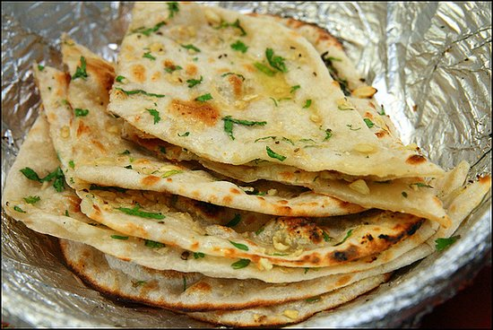

THANK YOU FOR ORDERING !
You have choosen Butter Naun
Naan is a leavened bread made from maida, an Indian white flour that is very delicate and powdery, similar to pastry flour. It is eaten most often with
curryused instead of a spoon to sop up all of the sauce and to pick up vegetables (and meat).

Go to Food list